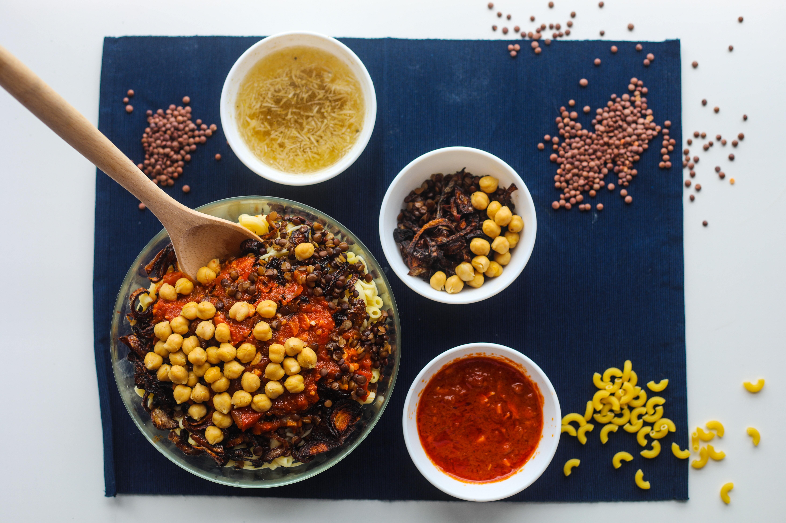

Koshari

Short Discription
Koshari is a traditional unique Egyption dish.Koshari is a mixture of different types of pasta, rice, brown lentils.Koshari is served with three sauces on it which are tomato sauce, hot sauce and a special sauce called dahaa.Koshari is vegetrian.
Ingredients
- 1 large onion, sliced into thin rings
- Salt
- ⅓ cup all-purpose flour
- ½ cup cooking oil
- Cooking oil
- 1 small onion, grated
- 4 garlic cloves, minced
- 1 tsp ground coriander
- ½ -1 teaspoon crushed red pepper flakes (optional)
- 1 can 28-oz tomato sauce
- Salt and pepper
- 1-2 tablespoon distilled white vinegar
- 1 ½ cup brown lentils, picked over and well-rinsed
- 1 ½ cup medium-grain rice, rinsed, soaked in water for 15 minutes, drained
- ½ tsp each salt and pepper
- ½ tsp coriander
- 2 cups elbow pasta
- Cooking oil
- Water
- 1 15-oz can chickpeas, rinsed, drained and warmed
Steps
- Sprinkle the onion rings with salt, then toss them in the flour to coat. Shake off excess flour.
- In a large skillet, heat the cooking oil over medium-high heat, cook the onion rings, stirring often, until they turn a nice caramelized brown. Onions must be crispy, but not burned (15-20 minutes).
- In a saucepan, heat 1 tablespoon cooking oil. Add the grated onion, cook on medium-high until the onion turns a translucent gold (do not brown). Now add the garlic, coriander, and red pepper flakes, if using, and saute briefly until fragrant (30-45 seconds more).
- In a saucepan, heat 1 tablespoon cooking oil. Add the grated onion, cook on medium-high until the onion turns a translucent gold (do not brown). Now add the garlic, coriander, and red pepper flakes, if using, and saute briefly until fragrant (30-45 seconds more).
- Stir in the distilled white vinegar, and turn the heat to low. Cover and keep warm until ready to serve.
- Cook the lentils. Bring lentils and 4 cups of water to a boil in a medium pot or saucepan over high heat. Reduce the heat to low and cook until lentils are just tender (15-17 minutes). Drain from water and season with a little salt. (Note: when the lentils are ready, they should not be fully cooked. They should be only par-cooked and still have a bite to them as they need to finish cooking with the rice).
- Now, for the rice. Drain the rice from its soaking water. Combine the par-cooked lentils and the rice in the saucepan over medium-high heat with 1 tablespoon cooking oil, salt, pepper, and coriander. Cook for 3 minutes, stirring regularly. Add warm water to cover the rice and lentil mixture by about 1 ½ inches (you'll probably use about 3 cups of water here). Bring to a boil; the water should reduce a bit. Now cover and cook until all the liquid has been absorbed and both the rice and lentils are well cooked through (about 20 minutes). Keep covered and undisturbed for 5 minutes or so.
- Now make the pasta. While the rice and lentils are cooking, make the pasta according to package instructions by adding the elbow pasta to boiling water with a dash of salt and a little oil. Cook until the pasta is al dente. Drain.
- Cover the chickpeas and warm in the microwave briefly before serving.
- To serve, fluff the rice and lentils with a fork and transfer to a serving platter. Top with the elbow pasta and ½ of the tomato sauce, then the chickpeas, and finally ½ of the crispy onions for garnish. Serve, passing the remaining sauce and crispy onions separately.
See other recipes?
Recipe Source